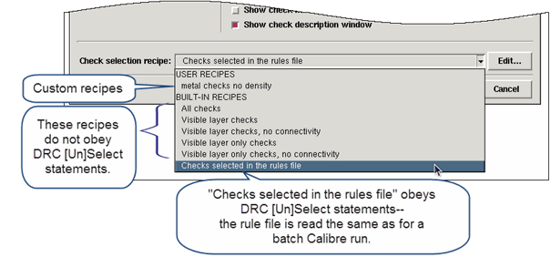

Calibre RealTime
Digital uses a standard Calibre nmDRC rule file. The check recipe
controls which checks in the rule file are executed during the Calibre RealTime
Digital run.
Procedure
- Choose Calibre > RealTime DRC > Options to
open the Calibre RealTime Options dialog box, or click the Options button
(
 ) on the integrated
toolbar.
) on the integrated
toolbar.
- Select
the configuration in the “Configuration” dropdown list.
- Specify the Calibre rule file
in the “Rule file” text field.
- Click Reload to
load the rule file.
Note: If you make changes to the rule file during a
Calibre RealTime session, you must manually reload the rule file
in order for the new rule file to be used.
The rule file for the active configuration is loaded automatically
on RealTime startup unless it is specified in the runset file.
- Specify
the layer map file in the “Layer map file” field.
- (Optional) Select options
in the dialog box; the defaults are suitable for most runs. See “Calibre RealTime Options Dialog Box (Innovus)” for a
definition of each option.
If you want the Calibre RealTime
Results window to open automatically after a run, enable the option
“Launch RealTime results viewer automatically.”
Select the Output files tab if you want
to save a summary file of DRC of the run and the DRC results as
an ASCII results database (RDB).
- Select the check recipe as
follows:
Checks selected in the rules file (default)
— This built-in recipe uses the Calibre rule file just as a batch
run of Calibre does.
Other built-in check recipes — You
can select a recipe that only runs checks on certain layers, excludes
certain types of checks, or runs all checks in the rule file.
Because these built-in
recipes do not obey DRC [Un]Select Check statements in the rule file, the recipes may execute
checks in the rule file that would not be executed during a batch
Calibre run. The recipe “Checks selected in the rules file” is the
only built-in recipe that obeys DRC [Un]Select Check statements.
See “Built-In Check Recipes”.
User recipes —
You can select a previously defined custom check recipe. See “Creating a Custom Check Selection Recipe”.
Figure 1. Selecting a Check
Recipe in Calibre RealTime Digital (Innovus)
- Proceed to “Running Calibre RealTime Digital in Cadence Innovus”.